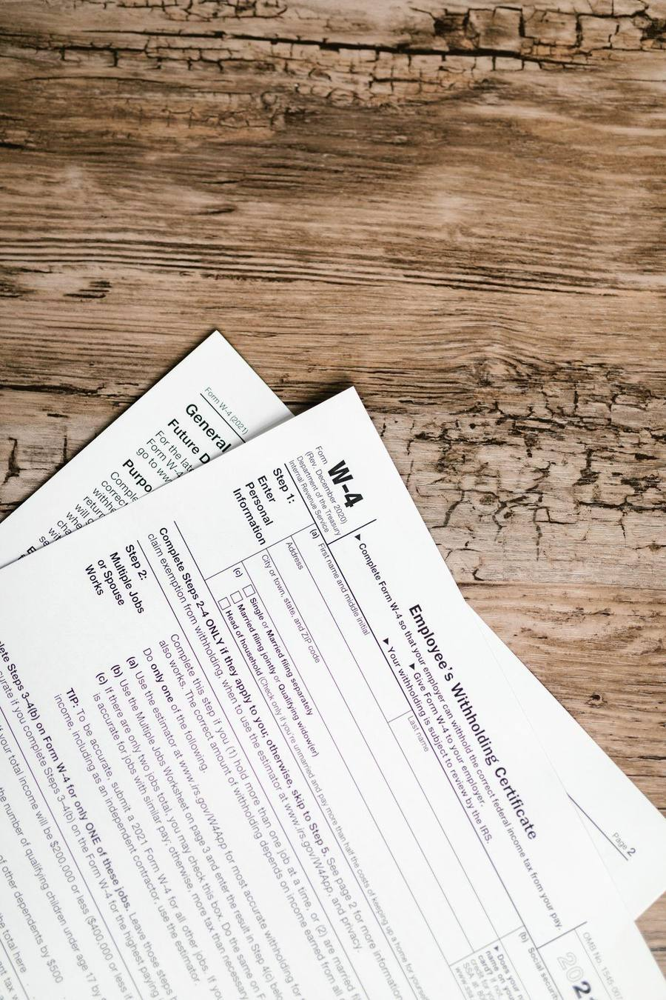

NPWP sekarang hampir selalu diminta. Melamar kerja, membuka rekening, sampai urusan pajak, semuanya butuh nomor ini. Kabar baiknya, per Oktober 2026 kamu tidak perlu lagi datang ke kantor pajak untuk membuatnya. Pendaftaran NPWP pribadi sudah pindah sepenuhnya ke Coretax, sistem baru Direktorat Jenderal Pajak yang menggantikan situs lama ereg.pajak.go.id sejak 1 Januari 2025, dan prosesnya gratis dari awal sampai akhir.
Siapa yang paling butuh panduan ini? Lulusan baru yang sedang melamar kerja dan diminta NPWP di formulirnya, pekerja lepas yang penghasilannya mulai dipotong pajak, sampai pelaku usaha kecil yang butuh NPWP untuk mengurus izin. Selama ini banyak yang menunda karena mengira prosesnya ribet dan harus antre di kantor pajak. Padahal semuanya bisa beres dari HP.
Siapkan Dulu 4 Hal Ini Sebelum Daftar
Sebelum membuka situsnya, siapkan dulu empat hal ini supaya prosesmu tidak putus di tengah jalan. Pertama, KTP elektronik dengan NIK yang aktif di Dukcapil. Kedua, Kartu Keluarga, karena sistem akan meminta nomor KK dan data keluarga. Ketiga, alamat email aktif yang bisa kamu buka, karena NPWP elektronikmu nanti dikirim ke sana. Keempat, nomor HP aktif untuk menerima kode OTP, plus perangkat berkamera untuk swafoto.
Kalau kamu punya usaha, siapkan juga Klasifikasi Lapangan Usaha atau KLU yang paling dekat dengan jenis usahamu. Sistem akan memintanya saat mengisi data ekonomi. Kalau satu saja dari hal-hal ini tidak siap, urus dulu sebelum mulai. Mendaftar dengan data setengah jadi hanya membuatmu mengulang dari awal.

Cara Daftar NPWP Online di Coretax, Langkah demi Langkah
Begitu semua siap, ikuti langkah ini satu per satu.
- Buka coretaxdjp.pajak.go.id di browser HP atau laptop. Pastikan alamatnya persis seperti itu, karena situs pajak palsu beredar dan bisa mencuri datamu.
- Klik tombol Daftar di Sini di halaman utama.
- Pilih jenis Wajib Pajak Perorangan.
- Saat ditanya apakah kamu punya NIK, pilih Ya, Wajib Pajak Memiliki NIK.
- Pilih Aktivasi NIK. Opsi ini membuat NIK kamu langsung berfungsi sebagai NPWP 16 digit. Opsi satunya, Hanya Registrasi, hanya membuat akun Coretax tanpa mengaktifkan status wajib pajak, jadi bukan pilihan yang kamu cari kalau tujuanmu memang punya NPWP.
- Isi data identitas sesuai KTP: nama lengkap, tempat dan tanggal lahir, jenis kelamin, status pernikahan, nama ibu kandung, pekerjaan, dan nomor KK. Tulis persis seperti di KTP, termasuk ejaan nama. Satu huruf beda saja bisa membuat validasi gagal.
- Masukkan email dan nomor HP, lalu klik Verify. Coretax mengirim kode OTP ke keduanya. Masukkan kodenya, dan jangan memakai email atau nomor yang jarang kamu buka, karena jalur inilah yang dipakai DJP untuk menghubungimu.
- Ambil swafoto lewat kamera perangkat, lalu klik Validasi Foto. Sistem mencocokkan wajahmu dengan data Dukcapil. Cari tempat terang, lepas masker, dan pastikan wajah masuk penuh ke dalam bingkai.
- Baca pernyataan Wajib Pajak, centang kotak persetujuan, lalu klik Kirim Pengajuan.
Sesudah itu tinggal menunggu. NPWP elektronik biasanya terbit dalam 1 sampai 3 hari kerja dan dikirim ke emailmu dalam bentuk PDF. Cek juga folder spam kalau belum juga masuk. Kartu fisik sudah tidak lagi diterbitkan, jadi PDF inilah NPWP resmimu.
Aktivasi NIK atau Hanya Registrasi, Pilih yang Mana
Bagian yang paling sering membingungkan pendaftar baru adalah pilihan di langkah kelima. Sejak 1 Juli 2024, NIK memang sudah berfungsi sebagai NPWP. Tapi fungsi itu baru resmi tercatat kalau kamu mengaktifkannya di Coretax. Itulah kenapa opsi Aktivasi NIK adalah pilihan yang benar untuk kebanyakan orang.
Opsi Hanya Registrasi cocok untuk keperluan khusus, misalnya seseorang yang hanya butuh akun Coretax untuk keperluan administratif tanpa mengaktifkan status wajib pajak. Kalau kamu ragu, pilih Aktivasi NIK. Kalau ternyata kamu sudah pernah punya NPWP lama, pastikan NIK kamu sudah dipadankan dan akun Coretax kamu sudah diaktifkan, bukan mendaftar baru lagi.
Kalau Pendaftaranmu Macet, Coba 4 Hal Ini
Empat masalah ini paling sering muncul, dan semuanya ada jalan keluarnya. Pertama, data tidak cocok dengan Dukcapil. Penyebabnya biasanya penulisan yang beda dengan KTP. Samakan persis, atau perbarui dulu datamu di Dukcapil. Kedua, kode OTP tidak kunjung datang. Pastikan nomor dan emailmu aktif, cek folder spam, lalu tunggu beberapa menit sebelum meminta kode baru. Ketiga, validasi swafoto gagal. Ambil ulang di tempat yang lebih terang, tanpa masker dan tanpa kacamata hitam. Keempat, sistem lambat atau kehabisan waktu. Coba lagi di luar jam sibuk, misalnya pagi atau malam hari, atau ganti browser.
Kalau NPWP belum juga terbit setelah 3 hari kerja, hubungi Kring Pajak di 1500 200. Dan satu peringatan penting: jangan pernah mendaftar dua kali dengan NIK yang sama karena mengira pendaftaran pertama gagal. Pengajuan yang masih diproses akan tertahan, dan kamu justru harus menunggu lebih lama.
Intinya, daftar NPWP sekarang jauh lebih mudah daripada dulu. Siapkan KTP, KK, email, dan HP, ikuti sembilan langkah di atas, lalu tunggu PDF-nya masuk ke email. Gratis, resmi, dan bisa selesai dari rumah.
← Kembali ke Other